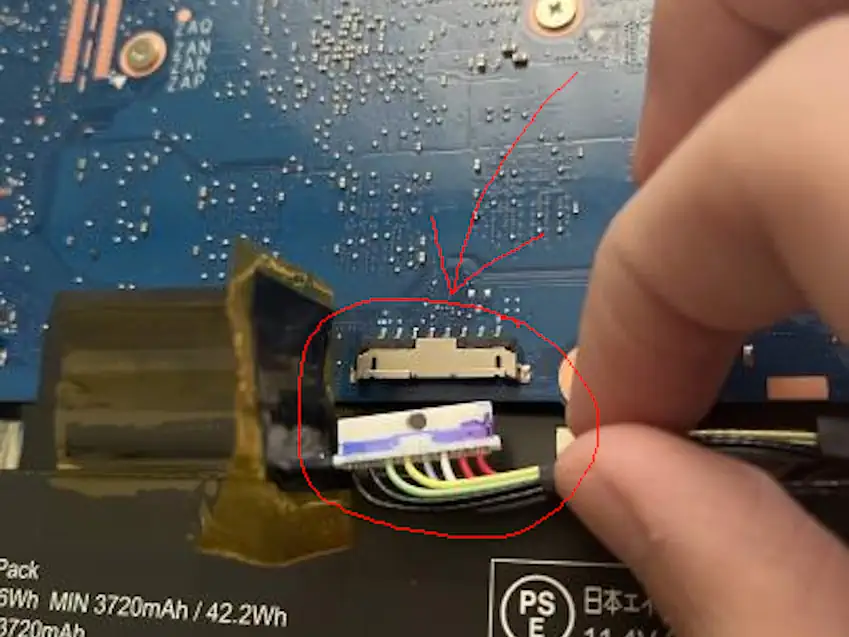
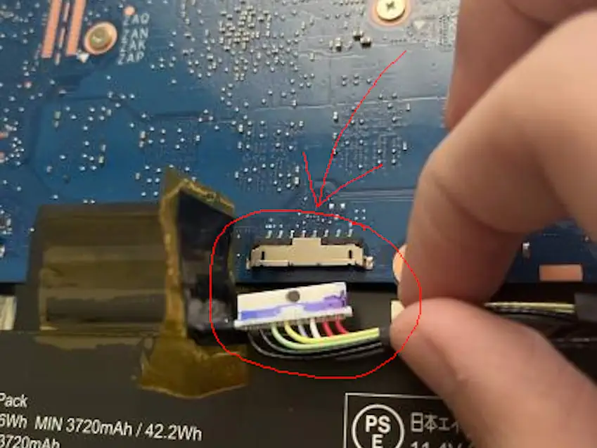
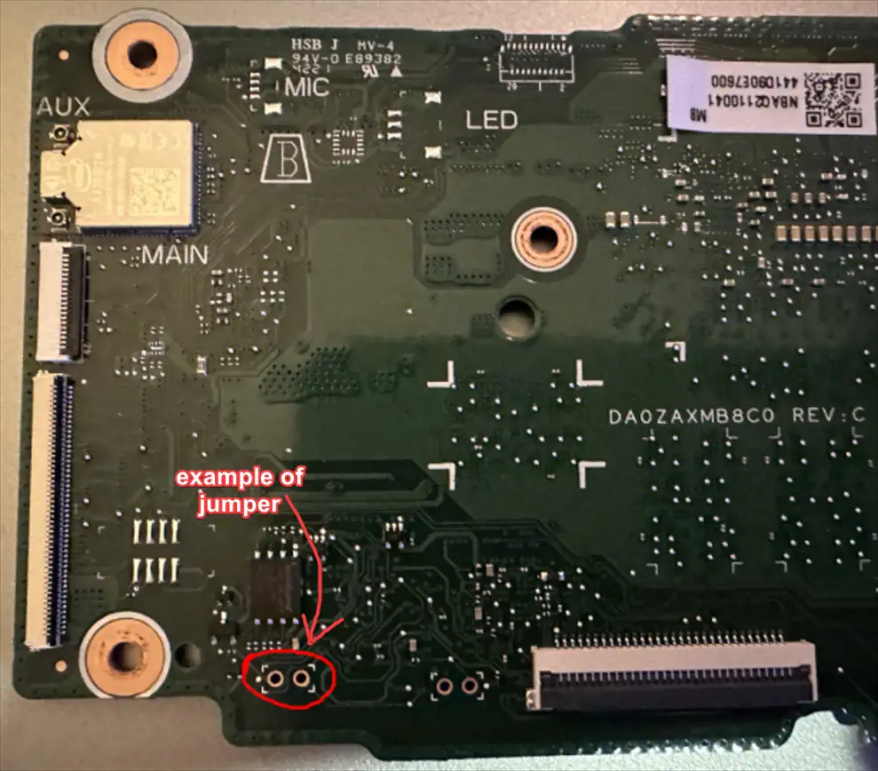
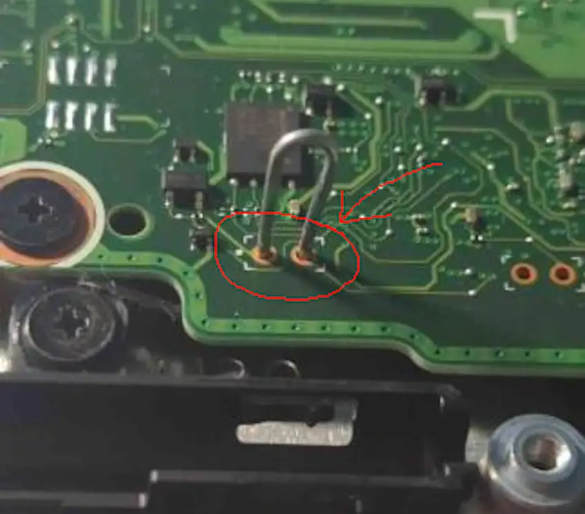
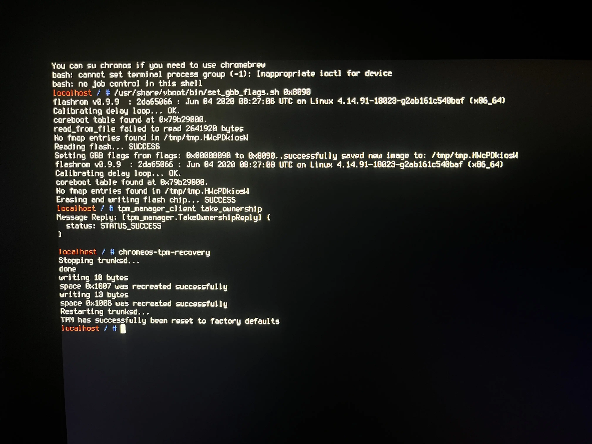

What you'll need
Disabling WP
First, you'll need to unplug everything in the Chromebook, such as the charger, any USB devices, etc.
Take your screwdriver and open the back panel of your Chromebook.
Find the battery cable and unplug it from the Chromebook, this should disable the Write Protection on the majority of Chromebooks. If not, search up what your WP method for your Chromebook is online.
An example of the battery connector location is shown below:
 

The Chromebook shown here is the Acer Chromebook 311 (C733).
Plug in the charger, and turn on the Chromebook. Yes, this will work as the Chromebook will run from the power of the charger.
On some Chromebooks such as DEDEDE, you will need to jump two pins to disable WP. You can easily do this by taking out the motherboard and using a paperclip to jump the two.
This is the case for you if WP doesn't disable after unplugging the battery. 
The Chromebook shown here is the Acer Chromebook Spin 511 (R753T).
If the Chromebook fails to boot from the charger because it bootloops at the developer mode screen, hold Power (⏻) + Reload (↻) + ESC till you're at the recovery screen to continue to the next step.
Executing Commands
Boot into SH1MMER or RecoMod and then enter the "Bash Shell". You cannot do this in ChromeOS due to the last command.
In the Bash Shell, execute the following commands below:
/usr/share/vboot/bin/set_gbb_flags.sh 0x8090
tpm_manager_client take_ownership
chromeos-tpm-recovery
The commands should report "success" at the end like this image:
If this doesn't work, run flashrom --wp-disable then try again.
Exit SH1MMER (or RecoMod) and turn off your Chromebook. Unplug everything including the charger, reconnect the battery, and then reconnect the charger.
Aftermath
After the Chromebook is powerwashed (as it disables devmode when doing this), the Chromebook should now be able to install any ChromeOS version without showing the "out-of-date" error.
Typically you will only need to do this once and then be able to downgrade to out-of-date ChromeOS versions at any time, however:
There is a slight chance that when you update to a version past 111 (such as 112 and later), you may receive the out-of-date error again. To fix this, simply repeat the steps you did again in this guide.